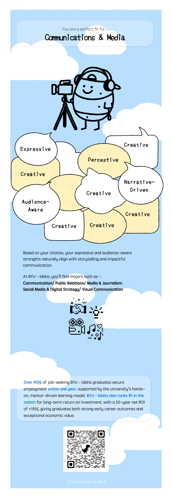

An interactive test to help students discover majors that fit their interests.
Overview
Site Name
Find Your Major
Site Topic / Short Description
Find Your Major is a small web application that guides users through a short visual test to help them
discover which major categories fit their interests and strengths. The experience is built around
potato characters, simple questions, and a clear result screen with twelve major categories.
Purpose & Audience
Purpose
The purpose of this site is to make choosing a major less overwhelming and more playful.
Through a sequence of ten questions and friendly potato characters, the site leads users to one of
twelve major categories and gives them a starting point for further exploration.
Instead of presenting a long list of majors, the site simplifies the decision-making process into clear
steps so that users can quickly see which areas might be a good fit and feel more confident about
their next academic and career decisions.
Intended Audience
The primary audience is high school students and first–year college students who are not sure which
major to choose yet. A secondary audience includes international students, parents, and academic
advisors who want an easy visual tool to talk about majors together.
Audience Scenarios
A student who likes drawing and design but is unsure whether to choose Graphic Design, UX, or Illustration.
A student who enjoys math and solving problems and wants to know the difference between Computer Science, Data Science, and Engineering.
An international student who wants a quick overview of majors that match their personality and long–term goals.
A parent or advisor who wants something simple to show during a conversation about possible majors.
Dynamic Elements (JavaScript Plan)
Overall Flow
The site will use JavaScript to control the flow of the test:
a start screen with six potato characters, followed by ten questions, three loading-style screens,
and finally one of twelve result pages. All screens will be rendered dynamically in the same
main area, without reloading the page.
Question Structure
Start Screen: A single start screen with the “Touch to START!” message and six potato characters.
When the user presses the start button, JavaScript moves to the first question.
Branch Questions (Q2–Q5):
These questions branch the user into different paths.
Question 2 has 2 versions, Question 3 has 4 versions, and Questions 4 and 5 each have 8 versions.
Question 4 is mainly used to deepen the branch but does not strongly affect the final result logic.
Common Questions (Q6–Q10):
Questions 6–10 are the same five questions for every branch.
The same five images and texts are reused, and JavaScript keeps track of the answers for scoring.
Loading / Transition Screens:
Between the last question and the result, three potato loading-style screens will be used.
A text like “Digging up potatoes...” will animate while the site calculates the result.
Result Pages:
At the end, the user sees one of twelve result pages. Each result represents a major category
(for example: Humanities & Languages, Communication & Media, Performing Arts, Computer Science & Data,
Science & Math, Engineering & Applied Technology, Education, Business, Psychology & Social Science, etc.).
Planned JavaScript Features
Data Structures:
Questions and results will be stored as JavaScript objects and arrays.
Each question node will include its id, step number, image path, and next question ids for “yes” and “no”.
Each result object will include its id, category name, description, example majors, and result image.
ES Modules and Functions:
The code will be organized into ES modules such as questions.js, results.js, and quizFlow.js.
Functions like goToNextQuestion(), renderScreen(), calculateResult(),
and renderResult() will keep the logic organized.
DOM Interaction & Events:
JavaScript will select the main container and replace its HTML content when the user clicks “Yes”, “No”,
or “Next”. Event listeners will be attached to buttons on each screen so that the UI feels like a
continuous app instead of separate pages.
Conditional Branching:
The branching from Q2 to Q5 will use conditional logic to move along the correct path.
Each branch will eventually map to one of the twelve major categories, which will be used to render the result.
Arrays and Array Methods:
Arrays will be used to store the list of majors inside each category and to manage the list of result cards
on the child page. Methods like forEach, map, and filter will be used to
generate result cards, filter by interest tags, and prepare display data.
Optional Enhancement – Favorites:
Users will be able to “save” a result or major category to a small favorites list.
This data can be stored in localStorage so that the favorites appear again
when the user returns to the site.
Branding & Visual Assets
Logo Concept
The logo for “Find Your Major” is based on six potato characters gathered together with the title text.
The title (“Find your major”) and the “Touch to START!” text are separated into their own image assets
so they can be reused in different layouts.
Six potato characters – core logo element (Startpage_potatoes.png).Title text for the logo (Title.png).Start button text (Touch to START!.png).
Color Palette
The color palette is designed to feel warm, approachable, and slightly playful, while still being
readable and suitable for an academic context. The vertical palette image is used in the prototype
to keep the main colors consistent.
Role
Sample
Hex (initial plan)
Primary (Buttons, key highlights)
#1B98E0
Secondary (Cards, accents)
#59C3C3
Accent (Potato characters, callouts)
#E29B3B
Background
#FAF7F2
Text (Dark)
#333333
High–level color palette image used in the visual prototype (color.png).
Typography
The typography combines a round, friendly display font for headings with a clean sans-serif font for
long text and instructions.
Heading Font: Baloo 2 (rounded display font)
“Find Your Major” – used for titles, main navigation, and result category names.
Body Font: System Sans (Arial / Helvetica / sans-serif)
Descriptions, question text, instructions, and result explanations will use a neutral sans-serif
typeface to keep the content easy to read on both mobile devices and desktops.
Major Category Potato Characters (Result Icons)
Each final result category is represented by a potato character. These icons will appear on the result
screen and in any “Explore categories” view.
To show visual growth from the first to the last question, two special images are prepared without text:
one for Question 1 and one for Question 10. These will be used in the test UI and as visual examples in
the site plan.
Q1.png – first stage potato illustration.Q10.png – final stage potato illustration.
Content Plan
Pages
Home Page:
Introduction to the test, brief explanation of how it works, the start screen with six potatoes, and a
clear “Start Test” button.
Test / Result Page (Child Page):
The interactive test itself (Questions 2–10, loading-like transitions) and the final result screen with the
major category. This page may also include a “See All Categories” section at the bottom.
Home Page – Planned Content
Short hero message: “Not sure which major to choose? Start with a simple test.”
Explanation of the flow in three steps:
1) Answer ten questions, 2) Watch the potatoes dig, 3) See your major category.
Start page visual using:
Start page_background.png as the main background,
Startpage_potatoes.png for the six characters,
Title.png and Touch to START!.png for the main call-to-action.
Call-to-action button leading to the first test question.
Test & Result Page – Planned Content
Question area showing the current question number (for example, “Question 3 / 10”).
Question text and illustration image for each question.
Q1 and Q10 will use Q1.png and Q10.png as base illustrations with text rendered in HTML.
Two large buttons for “Yes” and “No” (or similar responses) that move to the next question node.
Loading / transition sequence with the potato loading-style screens and the text “Digging up potatoes...”.
Result section with:
Result title (one of the twelve major categories) and the matching potato icon.
Result image: for example, COMM_result.png for the Communication & Media category.
Short description of the category and example majors.
Optional button to “Restart the test” or “Explore all categories”.
Each result category will be defined as an object like the example above. An array of these objects will
make it easy to render all twelve categories and reuse the same information in both the main result
screen and any additional “Explore categories” view.
Wireframes / High-fidelity Mockups
The images below show the planned layout for the Home page and a sample Result page.
While they are close to high-fidelity designs, they also serve as wireframes for structure and hierarchy.
Home Page (Start Screen): background illustration, six potato characters, title text, and
“Touch to START!” call-to-action.

Sample Result Page: Communication & Media category with potato character, description,
and example majors.